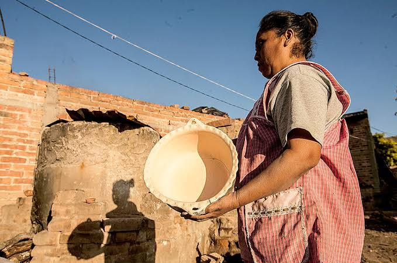
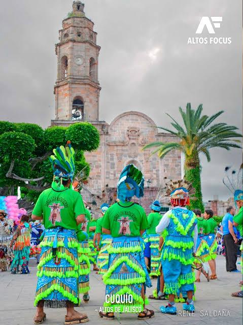
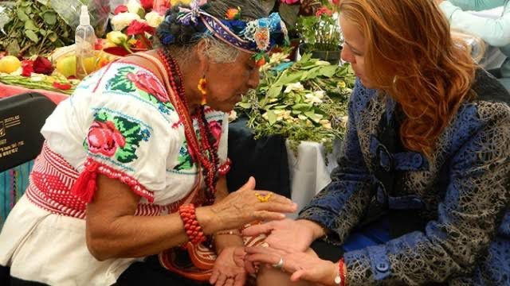

Nuestras Tradiciones
Conoce las costumbres, danzas, artesanías que nos define como pueblo.
- 🎨 Artesanías en barro
- 💃 Danzas aztecas
- Curanderos
Esta práctica se caracteriza por la elaboración de piezas de cerámica que reflejan la cultura y la historia del lugar. Los alfareros de Tenoahuac utilizan técnicas tradicionales que han sido transmitidas de generación en generación.Las piezas que se producen incluyen desde utensilios de uso cotidiano hasta objetos decorativos. La cerámica es conocida por su calidad y por los diseños únicos que a menudo incorporan elementos de la naturaleza y símbolos culturales.
es una manifestación cultural que rinde homenaje a las raíces indígenas de la región. Esta danza es parte de las tradiciones de los pueblos originarios y busca preservar la historia y los valores de sus ancestros.La danza se caracteriza por sus coloridos trajes, que suelen estar adornados con plumas, bordados y elementos naturales.
Los curanderos son vistos como intermediarios entre el mundo físico y espiritual. Sus rituales y ceremonias ayudan a las personas a enfrentar situaciones difíciles, buscando equilibrio y armonía en sus vidas.
